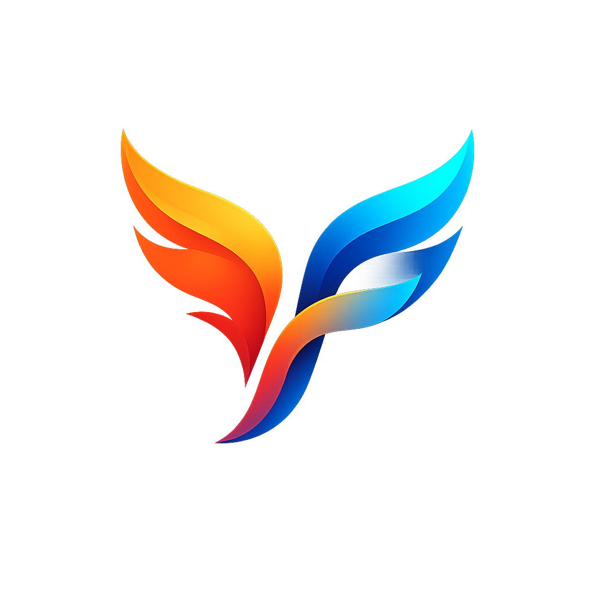

Un framework UI Rust greenfield — un seul code, trois plateformes natives, l'ergonomie de Flutter.
Couverture plateforme
Le même Application tourne partout ; seule la couche frus-shell connaît la plateforme.
Windows / Linux / macOS. Presse-papier, accessibilité lecteur d'écran, live-reload en dev.
Clavier mou (IME réel : composition/swipe), insets, cycle de vie — validé sur appareil.
Rendu, entrée, animations, souscriptions. Reste : un effet réellement asynchrone (fetch).
Architecture
Chaque crate a un rôle net ; les dépendances montent des fondations vers l'application.
Socle technique
Un cœur mince par-dessus des crates Rust éprouvées ; tout le reste — widgets, layout, interaction — est écrit dans frus.
Capacités
De quoi écrire une app non triviale — la logique se teste sans GPU ni fenêtre.
Santé des tests
Le cœur UI est couvert par des tests de logique et des goldens (rendu comparé au pixel).
Là où on vient d'arriver
Consolidation mobile, puis deux sauts d'ergonomie qui rapprochent frus de Flutter.
Ce qui reste
Ils sont surtout côté Web asynchrone et distribution — pas dans le cœur UI.